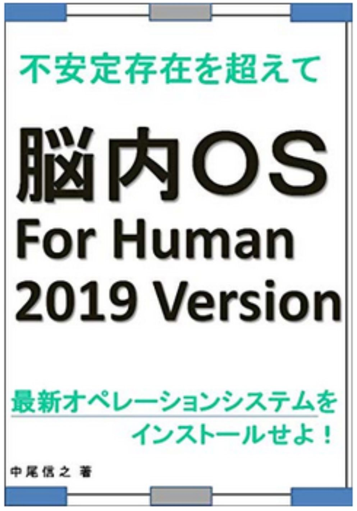
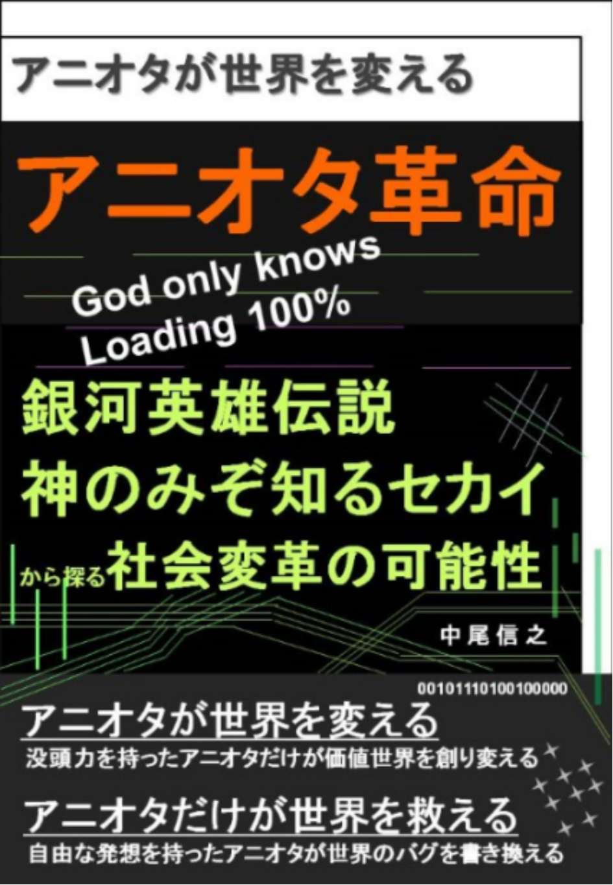
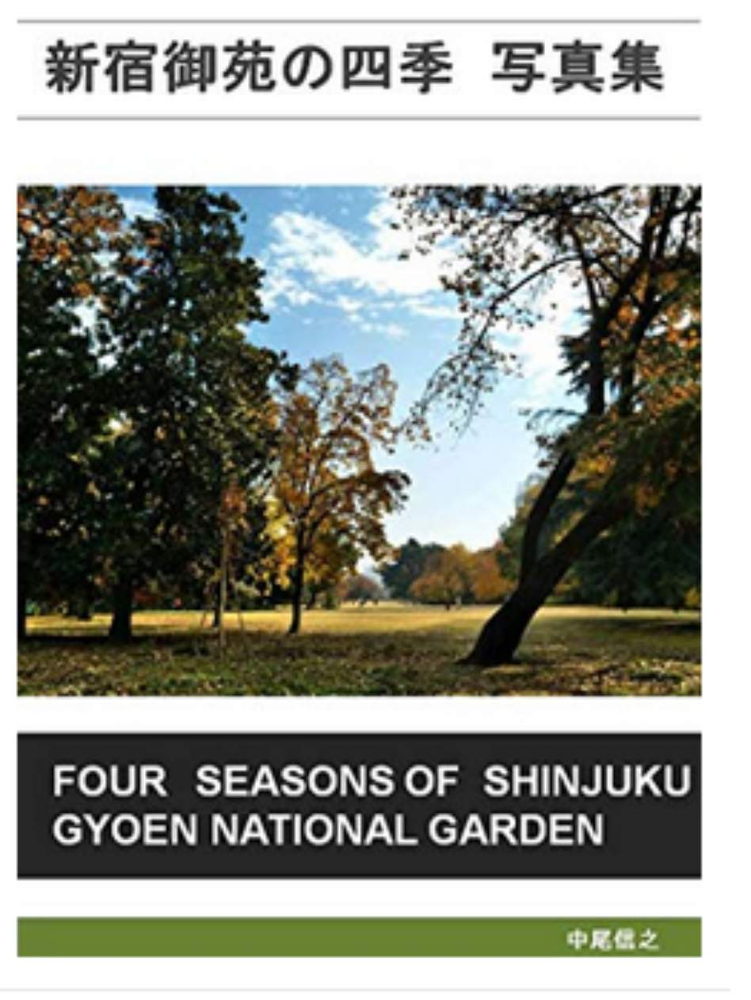
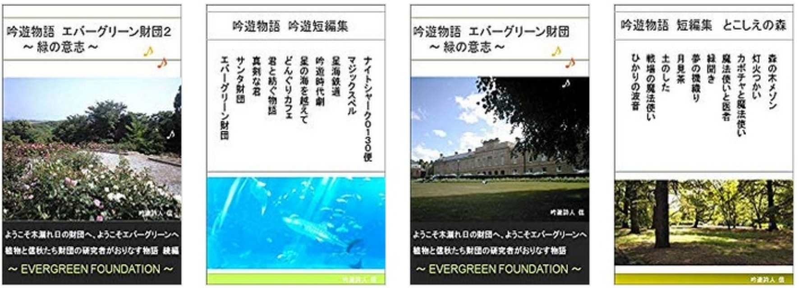

| あなたの世界を変える読書１０ あなたの世界を変える１０冊の名著 あなたの世界を変える読書 あなたの世界を変える１０冊の名著 | |
| 中尾信之 | |
| (2019) | |
あなたの世界を変える読書１０
あなたの世界を変える１０冊の名著
□はじめに
・永続する力
□第一章 生き方のヒントをくれる本
１．がんを克服できる脳 苫米地英人
２．傷つきやすい人のための 図太くなれる禅思考 枡野俊明
３．できる男は金を呼ぶ！ 船瀬俊介
４．最強のデータ分析組織 河本薫
□第二章 世界のとらえ方を変える本
５．人間は「心が折れる」からこそ価値がある 苫米地英人
６．成金 青春経済小説 堀江貴文
７．まだ買うな！ 不動産 榊淳司 他
□第三章 科学によって見方を変える本
８．考えすぎる脳、楽をしたい遺伝子 長沼毅
９．薬が病気を作る 宇田川久美子
１０．スーパーヒューマン誕生 人間はＳＦを超える 稲見昌彦
□おわりに
・脳内ＯＳ２０１９
あなたの世界を変える読書１０
あなたの世界を変える１０冊の名著
□はじめに
・永続する力
本シリーズは、キンドル読み放題書籍の中から、私が面白いと思った本を紹介させて頂いているシリーズである。２０１８年の３月からスタートした試みは、今回で、とうとう１０回目を数え、紹介した書籍も１００冊に到達する。１０冊に１冊良い本があるとすれば、１０００冊を吟味したことになる。
シリーズ１０回目を迎えたことで、ひとつの区切りではあるが、これは終わりを意味しない。知のネットワークを構築する旅はどこまでも続くものなのである。以前に記したように、私にとっては、苦労して読書をしているのではなく、読書をすることがライフワークであり、また、執筆することがライフワークになっているからである。そういうわけで今回も、今までと同じように直近、私が出会った本の中から、これはという本を紹介させて頂きたいと考えている。
しかし、区切りを迎えるにあたって、自分が本来のスタートの志を忘れていないかということや、この試みがマンネリ化しているのではないかという自分なりの振り返りもあって、時々、シリーズ第一弾から、最新作までを読み直し、多少の修正を加えたりしている。
シリーズ第一弾は、この試みを始めた主旨や、私と読書とのかかわりあいの歴史も触れており、このシリーズの原点であり、特別な意味を感じている。第一弾では、特に、世界のとらえ方を考える本たちを集めたということも意味深い。今回は、ガンに関することに触れた書籍が比較的多い。これは、私たちが生きていくうえで、病気に対する考え方を見直すことで、生きることに対する考え方を見直せると考えたからである。
また今回も、人間という生物の新たな可能性をとらえるための書籍を集めるようにしている。
この１０回目を迎えるにあたり、再度、第一弾で記載した、左記の言葉を思い出しつつ、今回の始まりとしたい。
読書によってあなたの世界観がつくられ、
あなたの認識する世界は変えられる。
認識世界が変われば、あなたが変えられる。
そして、豊かな世界を生きられるようになるのである。
私が、本シリーズで紹介した時点では、読み放題対象だった書籍が、その後、読み放題ではなくなっているものも出てきていますが、その点はご容赦を頂きたく思っています。そのような書籍については、私の推薦文を読むことで要点部分をご理解頂くか、興味を持たれた場合は、ご購入頂くか、その作者の他の読み放題書籍を手にとって頂ければと考えています。その点、ご了承頂きたく、よろしくお願いいたします。
□第一章 生き方のヒントをくれる本
１．がんを克服できる脳 苫米地英人
「あなたの世界を変える読書」シリーズを、今までも読んでいただけている方には、お馴染みの苫米地さんの書籍である。主題としては、がんを克服することではあるが、がんという病気の物理現象を、自分の力でコントロールしていく考え方などは、自分の人生を自分でコントロールしていくという本質につながるものである。本書では、ＩＰＳ細胞が見つかった今、がんは、今後１０年、２０年で飛躍的に治る病気になる可能性が高いという指摘も最後になされている。
まず、知っておくべきことは、がんは、私たちの６０兆個の細胞のうち、毎日数千個発生しており、それらは常に破壊されて増殖しないように制御されているということである。このことは、いろいろな方の他の書籍でも記載されている事実である。そう考えると、目立つ腫瘍になるまえの、がんというのは、非常に身近なものであることが分かる。本書では、毎日２０００個という数の記載があり、６０兆のうちの２０００個であるから、ちょっとしたプリントミスのようなものであると例えられている。
さて、現在、がんの定番の治療法は、手術、抗がん剤、放射線治療であり、手法としては完成しているが、これらは完全にがんを根治する手法とは言い切れないことから、がん難民と言われる患者さんが多く存在することもあり、がんは怖い病気という印象が定着しているようである。また、上述の３療法をせずに、何もしない治療法を推進する医師も存在し、確かに放任治療でも、がんが消える事例があるのも事実だという。また、笑うことが、がんを消すことにも有効とも言われる。がんが頻出の病気であるという刷り込み情報が蔓延しているが、一定の年齢まで、がんにならなかった方は、その年齢を超えると、それ以降、がんにならないことが多いというデータもある。
これに対して、苫米地さんの指摘は、人間の自然治癒力を最大化することの重要性を指摘するとともに、医師や医療のプラシーボ効果を最大化することの有効性と説く。 プラシーボ効果だから、医療なんていらないというのではなく、医療を受けるという決断、その判断自体が、自分が治ろうとする意思を強固にする効果があるのだというのである。 だからこそ、どのような医療を、どのように受けるかは、医師の意見をきちんと聞くとしても、自分自身で判断をする必要があるという。
この時、自分で物事を考えるのには、十分な時間をとれるのであるから、納得できないまま、判断を急ぐ必要がないのが、がんという病気の特徴だというのである。急いで入院をするように言っておきながら、病院の都合で手術日が変更されることは、ままあったりするようである。
そして、自分の気の持ち方としては、病気を治すことはゴールではなく、病気が治って当たり前であり、治った後に、どのような価値あることをしたいかということを考えるべきだという。同じように、患者さんの家族は、患者さんが亡くなった前提で物事を考えるのではなく、患者さんが治る前提で、治って一緒に過ごしているイメージを持って見守るようにすることが、プラシーボ効果を一層高めると指摘する。
仮に、医師から患者さんが、余命宣告を受けても、それは、あくまで病状に対する過去のデータの平均値であるため、ほとんど意味がないということも冷静に知るべきであると指摘する。
本書の冒頭は少し読みにくい部分があるかもしれないが、ぜひ、読み進めて頂きたい。本書の素晴らしいところは、がん患者の方を治すということだけではなく、そのご家族の側の気持ちの持ちようにも触れていることである。そして、患者、医師など、がんと向き合った数名の方の実体験も掲載されている。
その中に、二度のがんを克服した政治家の鈴木宗雄さんの事例も紹介されている。がんという病気のとらえ方が変われば、私たちの恐怖に対するとらえ方も変わり、生き方自体も変えていけるのではないだろうか。それは病気になった時に限らず、元気な今から、考えることができる事柄であると思われる。
２．傷つきやすい人のための 図太くなれる禅思考 枡野俊明
このシリーズで、過去にも紹介してきた書籍と同じで、本書でも同じようなキーワードが記載されている。本書は、それぞれの説が短く構成されており、読みやすい本である。
筆者は禅僧の方であるため、釈迦の言葉などにも触れながら、心の持ちようを解説してくれている。筆者がいう図太さとは、ずうずうしさなどとは違い、苦難にも負けない、たくましさ、やわらかさ、しなやかさ、おおらかさというような感覚である。
私自身も、ささいなことに思い悩んだり、小学校時代の嫌な先生の思い出から、直近の出来事まで嫌な思い出を思い出すこともある。しかし、苫米地さんが書籍で書いているように、人間の記憶は、正確に保管されているわけではなく、毎回、違う形で再合成されているような不確かなものであるということを知り、そのようなことを思い出して、くよくよしたり、嫌な思い出を強化したりすることは、無意味であるという思いが強くなってきている。
実際、悔やんでも、過去のことはコントローラビリティがないので、どうしようもない。しかし、思い出すにしても、その記憶のとらえ方なら、変えることもできる。
堀江貴文さんの本でも、第一弾で紹介したフィジーの本でも、どうにもならない過去のことで悔やまないことの重要性が説かれている。それと同じように、釈迦は、死や、死んだあとのことを考えることも無意味だと指摘していたように、まだ来ていない未来の不安を思い悩みすぎることも同じく、時間の無駄であろう。いろいろなことに対して、まずは行動をしてみて、くよくよせずに、どうにかなると開き直ることが推奨されている。
本書では、他人と比べないこと、それよりも一人の時間を作って自分と向き合うこと、自分の短所よりも長所と向き合い伸ばすこと、気持ちの切り替えをうまく行い、落ち込んでも、すぐに立ち直れるようにすること、「足るを知る」こと、などが紹介されている。足ることを知らない人間の欲は、満たされることがないからである。
いろいろなことに、くよくよせず、他人と比較せず、仮の姿である肩書に縛られなければ、ただの人として、どう生きるかを見つめるという指摘がある。我々個々人の幸せは、結局、ただの人として、どう生きるか、自分で思ったように生きることができるかに、かかっているようである。
３．できる男は金を呼ぶ！ 船瀬俊介
本シリーズでは今まで、船瀬さんの書籍を数冊紹介してきた。今回紹介する書籍は、テーマが決まっておらず広く、エッセイのように短い文章を集めたような構成になっており、読みやすい作品である。しっかりした本を読みたい方には、少し軽めの本ではある。もちろん、ロックフェラーなどの医療マフィアの批判も健在である。今までも、医療系の船瀬さんの指摘は、紹介しているので、その他の面白かった点について触れたい。
電通の戦略１０訓という内容が紹介されている。１．もっとつかわせろ、２．捨てさせろ、３．無駄遣いさせろ、４．季節を忘れさせろ、５．贈り物をさせろ、６．組み合わせで買わせろ、７．きっかけを投じろ、８．流行遅れにさせろ、９．気安く買わせろ、１０．混乱を作り出せという１０訓だという。私は、総額であるＧＤＰが無意味であると、高校生時代から考えてきたが、テレビのＣＭの配分をつかさどっている電通が、このような１０訓を持っていることからも、消費者はテレビや、広告代理店に踊らされてはいけないのである。私も、修復しながら２０年使っている服もあるが、船瀬さんは、手縫いで修復しながら、スーツを３０年、着続けているものがあるという。
「詐欺ギリギリが、じつは、傑作ＣＭなんですよね」という広告代理店の方のセリフも記載されているが、確かに、ＣＭの素晴らしい内容の伝達は、その商品の機能以上のイメージを植え付けることでなされている。低価格をアピールする携帯電話の月額費用も、小さく翌年以降は、いくらという安くない金額や、別途、光回線の契約をしている人に限るとか、二台目以降の値段など、というような記載されている。
それでは、通常の単価とは言えない単価を基本単価として広告しているのである。通信各社は、正当な基本料金で広告をうつべきである。私も、去年、ようやくスマートフォンにしたが、先月から、二年目で価格があがるようなので、翌年には、より適切な価格の会社の携帯に切り替える予定でいる。
船瀬さんはフリーのライターであるから書きたいことを書いているが、新聞記者の友人は、「本当のことが書けないんだよ」というのだそうだ。それでは、ジャーナリズムとは言えない。そのような大手新聞は、正直買う価値がないということではないだろうか。政府与党が情報を、流さなかったり、嘘を言うことを指摘するのがジャーナリズムの価値であり、存在意義なのである。現在のところ、国民の知る権利は、一般的なマスメディアより、かろうじて、書籍で担保されているように思われる。
４．最強のデータ分析組織 河本薫
本書は、大阪ガスという一企業のデータ分析部門の所長をされている方が書かれた書籍である。しかし、その内容は、一企業内の話という限定的な話ではなく、マネジメントに関する書籍として、汎用性が高い内容であり、一読に値する書籍であるため、紹介させて頂きたい。
あくまで、 データ分析というのは、経営のための手法であって、目的ではない という本質論が正確に指摘されている。流行の事象に流されるのではなく、目的を見失うなということである。ビッグデータ、ＡＩ、ＩＯＴ、イノベーションなどのワードだけに踊らされて、本質を見失うなと論じている。
そして、自身のデータ分析部門を、会社の意思決定プロセスを改革するための部門であるというミッションをかかげ、実際の活動については、「データ分析を用いた業務改革の支援」というスタンスをとられている。データを正しく整理をして、実際の意思決定は、依頼してきた部門にまかせる黒子の役割に徹するというのである。役割として意思決定の責任をとれる立場ではないため、そこには立ち入らないというスタンスを明確にしている。
そして、このような役割を明確にしたうえで、社内の他部門の要望に対して、個別に契約をするような形で、各部門から予算をもらい、サービスを提供する体制をとっている。ということは、社内で必要を認められなければ、活動できないということである。
私も「購買本部は本当に必要か スタッフ機能のあるべき姿を求めて」という本に記載しているが、スタッフ部門が、社内で価値を認められるようなサービスを提供できないのであれば、単なるコストセンターとして存在意義がないと思われるのである。筆者も、データ分析組織だけではなく、人事部門なども、自分たちで存在意義を明確にして、レベルの高いサービスを社内に提供すべきであるとしている。
筆者は自身の部門の役割を明確に定義し、そのサービスを提供するための組織体制を構築し、人材の育成を行い、社内のネットワークを作って、内外に認められる組織づくりに注意を払ってきたからこそ、社内コンサルティング部門として、価値が認められているのである。
本書は、組織づくり、人材育成など、マネジメント一般を論じた本として、また、組織の中で生きる人間の生き方を論じる本としても、参考にして頂きたい書籍である。
□第二章 世界のとらえ方を変える本
５．人間は「心が折れる」からこそ価値がある 苫米地英人
本書は、人工知能と人の知能について書かれた本である。最近、人工知能という言葉が流行っているが、もともと苫米地さんは１９８０年代、人工知能の研究が盛んだったころに最前線で研究をしていたため、現状の人工知能ブームを冷静に解説してくれている。
そもそも人間の知能に似せてコンピューターを作る考えは、ストロングＡＩと呼ばれる方向性であり、人間の知能に似せることは諦めて、ある機能のために、特定のコンピューターを作る方向性をウイークＡＩというようである。その意味では、現在の人工知能と呼ばれているものは基本的に、ウイークＡＩであり、人間の知能に寄せることを諦めている。人工知能というより、マシンということである。
そして、巷ではそのマシンが人間より優れているかどうかということを良く問題として取り上げている。しかし、本書を読んで、なるほどと、思わされた指摘は、そもそも電卓でさえ、計算するという機能においては、人間をはるかに上回っているということである。それぞれのコンピューターは、特定の機能においては、昔から人間を上回っているのである。
ストロングＡＩの立場にたてば、人間の知能の全て、感情も含めて人間の機能を再現していないものを人工知能と呼んでもいいのかという問題もある。本当の人工知能と呼ぶべきものは、人の心が折れることを知り、人の感情に寄り添ってくれるような、そのような人間らいしコンピューターであるという。
そうすると、コンピューターは、より人間的になり、人間は、より機械で体を補うようになり、その境が曖昧になってくるのだという。そして、人とは何かという問いを真剣に考える必要が出てくる。
誤った人工知能の議論に２０４５年に人工知能が人間を支配するようになるのではというものがあるが、苫米地さんは、そのようなことがあるのは、人工知能のせいではなく、そのプログラミングを組んだ人間の悪意か、バグのミスであるとする。プログラムのプリンシプルに、きちんと人間のために働くということを入れ込み、コンピューターが、自分で判断できないときは、人間に判断を仰ぐようにしておけば良いというのである。確かに、有史以来戦争ばかりしてきた人間自体が、悪意のプログラミングを作ったり、バグを放置したり、はたまた、ハッキングして悪用したりということをするリスクのほうが現実的に思われる。
「２０４５年は、人間が人工知能に支配される世界ではなく、人工知能が人間の生活を支援してくれる世界になっています」という前向きな言葉も記されている。
６．成金 青春経済小説 堀江貴文
前シリーズで紹介した堀江貴文さんの初めての小説「拝金」に次ぐ、小説第二弾である。ストーリーとしては、「拝金」より、前の出来事を記載している。アマゾンレビューの評価は、「拝金」の方が良かったという指摘や、「拝金」を読んでいなくても、楽しめたという意見とふたつに分かれていた。私には十分に楽しめる作品だった。
「拝金」は世にいう拝金主義を勧める書籍ではなく、多くのお金を手にしてしまった後に、さらにお金を求めるのでもなく、燃え尽きるのでもなく、お金を得たあとに、お金だけでは、何も満たされないことを知り、そこから本当に、自分がやりたいことを続けるという突き抜けた感覚を伝えようとしたことが、あとがきで書かれていた。詳しくは堀江さんの書籍を読んで頂けたらと思うが、「成金」についても、一大で富を築くことを進める本ではなく、歩兵が金になることを意味している。
企業名は、ぼかされているが、ソフトバンク、光通信、オンザエッヂ、ライブドアと思える企業名が出てきており、リアルなことを含んでいると思われるため、今回もピックアップすることにした。ＩＴ企業と呼ばれる企業のうちのほとんどは、「ＩＴもどき」であることなども指摘されている。
ソフトバンクの孫さんのことは、好意的な描かれ方をしているのに対して、鮫島という名前の人間は、非常に印象が悪く描かれている。これは、ソフトバンク・インベストメントの北尾氏のことを記載しているのではないかと思われる。ソフトバンクは、２００６年８月に、保有していたソフトバンク・インベストメントの株式約２７％を売却し、両者の関係は清算されたという。
もともと、ソフトバンク・インベストメントの北尾氏は、野村證券から、孫さんによって、ソフトバンクのＣＦＯとしてスカウトされソフトバンクの企業買収などを支えてきたという。しかし、孫さんの通信業界への投資に対して、北尾氏は批判的だったため決別したように書いている記事が多い。
ところが、孫さんの当時のボーダフォン買収などは、現在は成功だったと一般的に定義されているのだから、北尾氏の批判は、先を読めていなかったのか、「成金」にも記載されているように、ソフトバンクを乗っ取ろうとしていたため、孫さんにも嫌われたのか、どちらかのだと思われる。
堀江さんは、最近も、北尾氏について、「自分が一番倫理観ねーくせに、論語だの哲学だの表向きのカッコつけばっか」というふうに批判していると各種ネット記事では取りざたされている。堀江さんが、「成金」を書いたのは、ビジネスを真剣に行うことの楽しさを、私たちに伝えたいということがあったのと、北尾氏を痛烈に批判したいという点のふたつがあったように思われる。
私も北尾氏の描いた、論語をほめたたえる本を読んだことがある。その時は、正論を書いているように感じたが、今思うと、確かに非常に胡散臭いのではないかと思う。ライブドアによる日本放送の買収を、ソフトバンク・インベストメントがホワイトナイトとして邪魔をして、フジテレビは今、不調の中にあるのだから、ソフトバンク・インベストの投資は、上手くいったとは言えない。当時から、堀江さんが、放送とネットの融合をうたっていたのに対して、「成金」にも書かれているように、北尾氏のメディアへの執念は、メディアを再生させるのではなく、個人的な欲から来ているように思える。
７．まだ買うな！ 不動産 榊淳司 他
過去にも住宅に関する書籍を二度、紹介した。今回は、住宅だけではなく、倉庫についても取り上げられており参考になる書籍である。
住宅については、オリンピック後まで購入を差し控えるように推奨されている。仮に消費税で数十万円の税金がかかるとしても、標準的な物件でも、価格が５００万ほど下がることが予測されるため、価格の適正化を待つことが良いということである。
まず、現在の市場は明らかに供給過剰であり、完売しない物件が増加していることを認識したい。そして、完売しない状態が出ていることから、建設完了時期や、販売開始時期を遅らせているため、潜在的在庫が、まだまだあることが指摘されている。また、以前にも紹介した２０２２年に首都圏の農地で、営農期限が終了して宅地として出回るものがあり、これも土地価格の値下がり要因となるという。
首都圏の分譲マンションの平均価格は、２０１７年で５９０８万円、バブル期の１９９１年で５９００万円とバブル期を上回るという異常な水域に到達している。５年前と比べても、分譲マンションは３０％値上がりし、在庫が３０％増加したというのである。
ここまで価格を支えてきた実需ではない投資目的の購入も陰りが見え、すでに外国人投資家などは、高値のうちに売り抜けをする動きが活発になっているが、高値では売れない状態になっているというのである。この状態は、現在の株式市場と同じリスクをかかえているように思えてならない。
年収の５倍から７倍、場合によっては８倍のローンを組んで、高価なマンションを購入しても、この購入価格以外にも共益費や修繕の積み立て費用など、さらなるコスト増を負担しなければならないのである。またローンを変動利率にした場合のリスクについても触れられている。このような時期に購入をすることは、バブル時に高値で不便な宅地を購入し、ローンの返済に追われている悲劇の焼回しのように思われる。
さらに、空き家率が、これから年々増加していく日本では、現状の価格は官制価格と言っても良いのではないかと思われる。総務省の調査では、２０１３年度の空き家数は全国で８２０万戸あり、東京都はそのうち約１割の８１．７万戸である。２０２３年には全国で、１４００万戸になると予測されている。明らかに物件価格には、値下がり要因が多く存在しているのである。
ここでも消費者側ではなく、提供者側の論理がまかり通っているのである。建設業界は、値下がりすることは織り込み済みで、売れる間に売上と利益の確保を行い、値下がりした後は、損切りをして、在庫セールをしていくものと思われる。
このような中で、住むところを選ぶことは、サービスの良い自治体を選ぶことでもあるという。人口を減らし続ける町がある中で、流山市は、子育てがしやすいブランディングと、実際のサービス拡充により子育て世代を呼び込み、税金を確保し、そして都市の価値を上げつつ、物件の価値も下がらないように好循環を生み出しているという。たとえば、８年間で保育園は２．８倍に増やし、定員数は３．１倍に増やしたという。送迎保育ステーションという園までの送迎サービスも提供している。逆に、そのような政策が取れない市町村は、没落するほかないのである。
また、この流山市には、東京ドーム３０個分の物流倉庫が２０２２年に完成する。その他、２０１７年の首都圏の新しい物流倉庫の延べ有価面積は７２．６万平方メートル、関西圏は１１２万平方メートルと、過去１０年で最大だという。さらに、首都圏では２０１８年は２４８．６万平方メートルの完成が予定され、これも飽和状態になりつつあるのではと言われている。また、同様にビジネスホテルについても、供給過多の状況が見て取れるというのである。
このように住居、物流倉庫、ビジネスホテルともに、供給過多になってくると、条件が良いところだけが価格値下がりをさけられ、それ以外は、価格の適正化プロセスに乗ってくるということが予想できる。これは、すでに予測というよりは、確定的な未来だと言えそうである。
□第三章 科学によって見方を変える本
８．考えすぎる脳、楽をしたい遺伝子 長沼毅
本書はアマゾンレビューでも評価が分かれている書籍である。個人的には、最初の半分と、終わりの部分を読んで頂ければと良いのではないかと考えている。しかし、本書に記載のあるキーワードにふれると、人間の進化についての思考実験に役立つと思われるので、それらのキーワードをいくつか紹介したい。
本書のタイトルは少し分かりにくい部分もあるが、要は、人間以外の生物は思い悩むことなく精一杯生きているのに対して、人間は必要以上に思い悩みながら、ダメだと分かっていることも付き合いで行ったりしつつ生きているが、もう少し、他の生物たちのように、あるがままに楽に生きるようにしても良いのではないかというのが趣旨である。
気に入ったキーワードとしては、７３億の人類の遺伝子のばらつきが非常に少なく、一時、人口が、種の保存に限界となる１万人程度までに絞られたと推定されるということである。実際、約７万年前にそのような事態になったのだと言われているそうである。
また、ある研究者の説では、文明ができ始めた６０００年前の人類の脳の状態がもっともコンディションが良くそこから劣化しているという人もいるという。これは、いささか言い過ぎかもしれないと思うが、その頃から、あまり進化していないのではないかということは推測できる。
なぜか、同種間で、無益な殺し合いをするのは、脳が発達した人間、チンパンジー、イルカであるという一方で、脳が発達したイルカは、人間を助けることがあったり、種類が違うイルカが別のイルカを助けることなども報告されているという。脳の発達は、殺し合いを生む一方、助け合いをも生むのである。ちなみに、人とチンパンジーの遺伝子は、数％しか違いがないという。
遺伝子情報は、スイッチされなければ、それが特徴や性質として現れることはないのだから、必ずしも我々の行動や性格、生活が全て遺伝子によって完全にコントロールされているわけではないと言える。そして、このスイッチするしないをつかさどると思われるマスター遺伝子のことは、まだ分からないことが多いという。
私としては、遺伝子にどのような情報があったとしても、プラスの情報だけを読み取り、人間が上手く自分でコントロールできるようにすることに重きを置いた考え方に、賛意をおぼえる。仮に、ある病気を発病する遺伝子を持っていたとしても、それによって発病したスイッチを、自分でオフにできるような考え方である。
また、本書でも指摘されているように、遺伝子のミスコピーによって、オリジナルと違った産物ができることで、発がんの原因になったりする一方、これが、遺伝子のバリエーションが増えるという。このようなミスコピーが、突然変異として進化の原動力になるという点も、人類を含めた生物進化の可能性につながる話であるように思われる。
９．薬が病気を作る 宇田川久美子
今までも、船瀬さんや内海さんの医学に関する書籍を紹介してきた。今回の宇田川さんも、両名の指摘と同じような主張を、薬剤師の立場から私たちに教えてくれる。本書でもガンに関する考え方が記載されているが、今回、１冊目で紹介した苫米地さんの指摘と近しい部分が多いので、この２つの書籍をあわせて読んで頂けたらと考えている。
前も、紹介したイスラエルでの医者のストライキで、ストライキ期間は死亡率が半減していたという事実が非常に面白い。そして、本書ではさらに、コロンビアのストライキでも死亡率が３５％減少したことこと。ロサンゼルスのストライキでは、手術が６０％減少したことで、死亡率が１８％減少したことがあげられている。そして、ストライキが終わると、これらの死亡率はすぐに元通りになったというのである。
薬剤師独自の視点としては、病気を治すために薬を出しているのに、どうして、いつまでも薬をもらい続けにくるのだろうと、疑問を持ったことが、このような書籍を書く活動につながったきっかけだという。
基本的に薬というのは不自然な人工物であり、異物であるという。そして、薬効は毒に対する体の反応に過ぎない。先天性の病気や、急性の症状に対しては有効な薬があることも確かではあるが、それ以外は、体が病気を治すために行っている発熱や、頭痛など必要な治療行為の症状を薬で押さえつけてしまえば、症状は治まるが、病気自体が治らないことになってしまうというのである。宇田川さんによれば、「健康に生きるための十分な力を、人間の体はもともと備えている」という。
薬の副作用は規定されていたとしても、複数の薬を同時に飲んだ場合に発生する副作用は未知であるという。そして、人によって、またその人の、その時々の状態によって発生する副作用は、飲んでみないと分からず、予測不可能だというのである。そして、このリスクは、お医者さんで処方される薬に限らず、市販薬や漢方薬でも副作法には注意をする必要があるという。
インフルエンザに効くとされるタミフルは、２００１年に保険適用になったようであるが、２００７年に事故があり、タミフルは精神に影響する可能性があることが指摘されている。
この例からも分かるように、薬の認可の時点では、薬のリスクが正しく把握されていないことがあるのである。だからこそ、新しい薬ほど、臨床数が少なくリスクが洗い出されていないと言えるのだ。また、タミフルは日本に生産量の７５％が集められているという。
これは異常なことである。筆者によれば、各国がタミフルを必要な効く薬と認めていれば、お互いにタミフル争奪合戦が起こるが、アメリカでさえ、健康な大人や子供にはタミフルは不要と公表しているため、そのような争奪戦が起こらず、日本が独占しているがごとく、買い占めができているのだという。そして、日本人は、それをありがたく大量に利用し、医療費を膨らませていくのである。なんという皮肉なことだろうか。
また、以前も本シリーズで紹介したが、インフルエンザワクチンも、毎年違う種類のインフルエンザが流行るのだから予測ができず、ワクチンを打ったとしても、インフルエンザが発症することがあり、ワクチンを打たなくても、発症しない人もおり、結局はどれだけ自分の免疫力を高められているかということが問題であるという。このインフルエンザの型の予測は厚生労働省が行っており、そして、新型のインフルエンザの流行が予測された場合は急いで薬を作り、十分な安全テストを経ないまま利用しなければならない状態となるという。また、ウイルスは自在に型を変えることもあり、効果は測定しえないというのである。さらに、ワクチンに入っているホルマリンは発がん性のある劇薬であり、アルミニウムや水銀などの有害物質を含んでいるというのである
そして、そのことはガンについても言える。いくら、手術や放射線治療、抗がん剤などを駆使してガンを一度除去しても、根本となる自分の生活習慣や考え方を変えないと、再発する理由が残っているため、再発して当然であるという。
また筆者の指摘で、その通りだと思ったのは、子供の医療の無料化が、逆に子供の薬漬けにして、危険にさらしているのではないかという指摘である。肉体的に内蔵の発達などが未熟な子供への薬の投与は、大人よりもリスクが高いのだという。
薬の臨床試験においては、大人の臨床結果を持って、子供には量を減らして処方するだけで、子供がどれだけの薬で危険があるかというデータ自体がない状態で、処方されているのだそうだ。大人としては、自分の健康を自分で考えるのと同時に、それ以上、子供の健康には気を配り、薬漬けにしないように、医療漬けにしないような考え方を子供と一緒に探っていくべきであると思われる。
１０． スーパーヒューマン誕生 人間はＳＦを超える 稲見昌彦
本書では、科学技術と、海外の映画や、日本のアニメで登場する世界の境界線を探るような試みがなされている。アニメから着想をえて技術を考えることもあれば、技術の進歩にあわせてアニメなどの世界が広がっていくということもありえる。
本書は、現在の技術レベルがどの程度まで発達していて、どのように人間の世界を変える可能性があるかを説明する過程で、そもそも私たちの体や心がどのように機能しているかということも説明してくれている。人間の認知、体の体感が非常に曖昧だという点の指摘もある。
人間の脳は、現実世界を１００％そのまま認識しなくても、必要な部分だけ五感で感じて、認識するだけで良いのだから、バーチャルリアリティで作られる世界も、解像度などが高いということよりも、本物らしく感じられるということで十分なのである。確かに、苫米地さんの本でも記載されているように、人間は、映像がない小説など文字を読んだだけで、その世界に入り込むことさえ可能なのである。
本書の指摘で面白いのは、人間の認識というものが、人間の体という枠組みの中での制限を受けているということである。ひとつの例は、人間が話す言葉は、自分の声を、自分の耳で聞いているが、これを邪魔する行為をすることで、人間は話をしづらくなることもあるという。これと似た例は、電話をしているときに雑音が多いと、大きな声で話すということなどでもあらわれているという。頭や心というものが、身体と相互作用で機能しているという一例である。
さて、私が今年、特に気に行ったアニメは、「ソードアートオンライン」と、「攻殻機動隊」と、「神のみぞ知るセカイ」である。まさに、本書の後半では、これらの世界に描かれているようなことの可能性をさぐるような内容が書かれているのである。
先日、テレビを見ていた際に、たまたま本書の筆者である稲見さんが出演され、本書にも紹介されている光学迷彩技術の紹介がされていたのを見ることができた。この光学迷彩の考え方を、筆者は「攻殻機動隊」で思いついたという。光学機動隊では、主役の草薙素子が法ではさばけない相手を暗殺する作戦を終えた後、光学迷彩で景色と溶け込んで捕捉されないようにするシーンや、草薙の敵が、光学迷彩で姿を消すシーンなどが登場する。
筆者の開発した光学迷彩は、見る側が特定のスクリーンを見ることで、光学迷彩機能のあるシートに、撮影した映像が映し出されて後ろに透けて見える技術である。テレビでは、筆者が光学迷彩になる服を着て、それを特定のモニターから他の人がのぞくと、この服が透けて見えるというシーンと、車に乗った運転手が、自分の車の壁を透けて、車の後ろや横を見える応用技術が紹介されていた。つまり、他人から見えなくなるのではなく、見る側が景色を見やすいようにする使い方である。見る側がモニターを見るなどの視点をコントロールする必要があるため、攻殻機動隊の光学迷彩と、完全に一致した光学迷彩ではない。
これは、他のアニメから例をあげるとすれば、本書では紹介されていないが、Ｚガンダムのリックディアスという機体に乗った、主役のカミーユビダンの父が、「この３６０度モニターは完璧に近い」と語ったシーンにあるように、見る側の視界を手助けするものである。
本書の前半では、けがをした際に利用する義足などは、もともとの機能を補てんするものであるが、もともとの機能を超える道具を人間が拡張させていくことの可能性が検証されている。そして、その道具は、何も体の内部や、体と一体化しているとは限らない。人間の記憶を補完する道具として、スマートフォンなどの外部媒体を用いていれば、それも一つの人間の機能を道具として外部に拡張させているという見方ができることも指摘されている。これをさらに推し進めれば、攻殻機動隊で描かれているように、脳の記憶を電脳という形で保持することであるのかもしれない。攻殻機動隊では、人間の体を機械で補うことは義体化と呼ばれている。実際、技術が進歩すれば、脳の対応年数と身体の対応年数とのギャップの部分は、義体化によって埋められることが想像できる。
自分は家の中でいて、自分のコピーロボットを自分の意思で動かしていくようなことに近い話も本書で取り上げられているが、これは、攻殻機動隊の世界では遠隔義体の活用であり、自分の身体の義体化より進んだ利用法である。
詳細は、本書を手にとって頂けたらと考えているが、最後に本書のタイトルとなっているスーパーヒューマンという言葉を説明する筆者の言葉を紹介したい。
「情報技術、バーチャルリアリティ技術、機械技術、ネットワーク技術などのすべてのテクノロジーがあわさると、人間は道具をつくるだけではなく、自らの身体性を自らの手で作り変えることができる存在、つまりスーパーヒューマンへと姿を変えるのだ」
単なる技術の進化だけではなく、人間の認知力の向上についても、技術の進化とあわせて考えていきたいものである。
□おわりに
・脳内ＯＳ２０１９
２０年ほど前に、「文化地帯説」という言葉を習ったことがある。科学技術の進歩に比べて、私たちの社会の文化や制度などの進化スピードが常に遅れることを意味するものである。
第一次世界大戦は、１９１４年から１９１８年とされ、第二次世界大戦は、１９３９年から１９４５年であるから、第一次世界大戦と第二次世界大戦の間の１９２２年に発表された説である。
それから約１００年がたち、さらに科学技術の進歩のスピードは上がっているのに比べて、おそらく私たち人間の感性は、西暦が始まった頃の２０００年前とおそらく、ほとんど変わりがないはずである。体の仕組みは、さらに、人類のスタート時点から、それほど大きく変わっていないことだろう。社会の文化や、制度が遅れるということは、それらを形作ることに影響を与える、個々人の心が、科学技術のスピードとのタイムラグの中を生きているということだと思われる。
いわば、通常の人間は、いまだに２０００年前のオペレーションシステムを脳内にインストールして生きているということなのである。このＯＳは生まれながらに保持しているものではなく、人間が成長をしていく社会化と言われる過程で、学校や関係している人間関係の中でインストールしていくものである。これが、過去のシリーズで紹介してきた、ブリーフ・システムであったり、思考のフレームというものであると思われるが、これを分かりやすくいえば、ＯＳであると言えるのではないだろうか。
伝統宗教の教義も、この古いＯＳのひとつであろう。エジプトやメキシコの古い遺跡を掘り起こして、当時の人々の政治や信仰の謎を解いても、生まれ変わりという古い考えを持っていた人間のＯＳの仕様は、今の我々には不要な仕様なのである。
私たちは、いまだに通常搭載の２０００年前のＯＳで、為政者にとって望ましい行動体系をするようなプログラムのままで生きていることを善しとして良いものだろうか。
ここまで１００冊の新たな知識をインプットし続けてきた私たちは、これらをひとつの大きなゲシュタルトとして活用し、最新版のＯＳをフル稼働させて、新しい目で、この世界を認識しなおせるはずである。
新しい年の始まりに、私たちの体の中の６０兆個の細胞が、常に生まれ変わっていることを意識しながら、新しいＯＳの起動スイッチを押してみようではありませんか。
今回も、本書を手にして頂き誠にありがとうございました。
また、次回お会いできますように。 中尾信之

□作品紹介

脳内ＯＳ ＦＯＲ ＨＵＭＡＮ ２０１９ ＶＥＲＳＩＯＮ
最新オペレーションシステムをインストールせよ！
https://www.amazon.co.jp/dp/B07N1T1TZF

自分を生きる天職（転職）のすすめ ～１００％実力を表現する面接法～
http://www.amazon.co.jp/dp/B07BD3K67Z

はじめてのチームマネジメント ワンチーム・ビルダーを目指して
https://www.amazon.co.jp/dp/B07BJ98FTT

購買本部は本当に必要か スタッフ機能のあるべき姿を求めて
https://www.amazon.co.jp/dp/B07BQ9BFDS

あなたの世界を変える読書 あなたの世界を変える１０冊の名著
https://www.amazon.co.jp/dp/B07BT28HLV

あなたの世界を変える読書１２ あなたの世界を変える１０冊の名著
https://www.amazon.co.jp/dp/B07PS8263Z

アニオタ革命 アニオタが世界を変える 銀河英雄伝説 神のみぞ知るセカイ から探る社会変革の可能性
https://www.amazon.co.jp/dp/B07CRQ3WWD

屋内植物園計画 小さなスペースで緑を楽しむ魔法
https://www.amazon.co.jp/dp/B07CWRK2CN

在庫管理の正解 在庫管理は、こんなに簡単だった
https://www.amazon.co.jp/dp/ B07GFS2YDN

新宿御苑の四季 写真集
Four seasons of Shinjuku Gyoen National Garden
https://www.amazon.co.jp/dp/ B07N83G4L5

吟遊物語集 吟遊詩人信